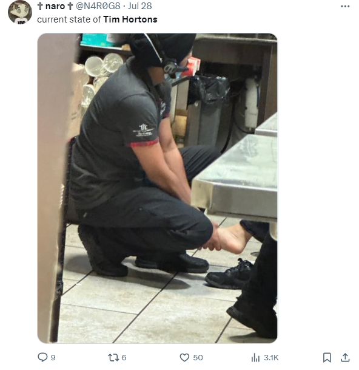

真的太太太恶心了！！！
近日，一段令人作呕的视频正在网上疯传，在北美一家Subway连锁店中，一名员工一边咀嚼着熟食，一边脱了鞋，将沾满泥土的光脚放在柜台上……
据英文媒体Daily Mail报道，这一幕发生在美国芝加哥的一家Subway连锁店中。
不少顾客正在这家餐厅等待点餐，而一名身穿棕褐色裤子和绿色衬衫的男子光着脚，盘腿坐在备餐台上。令人反胃的是，他的脚底和脚趾上还沾满了黑泥……
在这段发布在TikTok的视频中，只见这名赤脚男子将一层层的肉片堆放在操作台上，而其他员工似乎不为所动，继续在他周围工作。
一名身穿条纹短裤和蓝色背心、留着一头黑发的女子忍不住问道：“这样卫生吗？”
但员工们似乎对她的问题置之不理，没有回应，而是继续做三明治。
“当我们向他们指出这件事，他们没有觉得有任何问题！”这段视频的标题中写道：“再也不去吃Subway了！”
这段视频发布在网上后，也很快引起了轩然大波，不少网友纷纷表示，他们对Subway店员的所作所为感到非常不安。
“为什么人们在看到这一幕后还要继续买食物？太恶心了！我一定会打电话举报的！”一个人说。
“卫生部门必须要看看这个！为什么人们还是要在这买三明治，换做我我一定会转头就走。”另一个人说。
还有人问：“为什么人们只是看着却不指责他们？”
“Subway一直很脏，等餐的时候看到他们员工戴上手套去扔垃圾，回来接着抓菜！马上走了，再也不去。”
不少人对现场顾客的行为感到不解，为什么看到这名赤脚男子的行为后还在排队等待点餐？
一名网友表示：“问题是为什么还有人要在这里点餐？”
“人们竟仍然在排队等着吃三明治，这真的太疯狂了，”另一个人说。
“这真的太脏了！！！我什么都不会点，他们为什么还在那里点餐？”有人表示困惑。
有些人看到这名男子的脚后感到震惊。
“他的脚很脏……”一个人说道。
“盘腿坐在操作台上，然后在脚边工作……吐了！”
“光脚坐在操作台上？太恶心了！当自己家了？”
要知道，这已经不是近期曝出的首件跟快餐店员工“赤脚”相关的事件了！
近日，有惊人照片显示：在加拿大温尼伯一家Tim Hortons，店员正在为另一个人按脚。↓ ↓ ↓
这一幕也是轰动全网……

前不久，Tim Hortons还被曝出直接将甜甜圈裸露着放在汽车后备箱，引发了网友们的不满。
对于这件事，你怎么看？